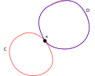

Let \(f\) be a continuous function, such that for any real numbers \(a\), \(b\), \(f(a + b) = f(a)f(b)\). Then, \(f(x) \geq 0\) for any \(x\in\mathbb{R}\).
By way of contradiction, suppose \(f(x) < 0\) for some \(x\in\mathbb{R}\). Then, \(f(x) = f(x + 0) = f(x)f(0)\). This implies \(f(0) = 1\). Since \(f\) is continuous, \(f(c) = 0\) for some \(c\) between \(x\) and \(0\) by the intermediate value theorem. Then, \(f(x) = f(x - c + c) = f(x - c)f(c) = 0\) is a contradiction. Hence, \(f(x)\geq 0\) can never be negative.
Let \(\{x_n\}\) and \(\{y_n\}\) be convergent sequences, such that \(x_n < y_n\) for any \(n\in\mathbb{N}\). Then, \(\lim_{n\to\infty} x_n \leq \lim_{n\to\infty} y_n\).
Let \(\{x_n\}\), \(\{y_n\}\) be sequences, such that \(x_n\to x\) and \(y_n\to y\). Let \(\epsilon > 0\). For any \(n\) large enough, we have \(|x_n - x| < \frac{\epsilon}{2}\) and \(|y_n - y| <\frac{\epsilon}{2}\). Then,
\[\begin{aligned} x_n - y &< y_n - y \leq \frac{\epsilon}{2} \\ x_n - x &< y - x + \frac{\epsilon}{2} \\ -\frac{\epsilon}{2} &< y - x + \frac{\epsilon}{2} \\ x - y &< \epsilon. \end{aligned}\]
Since \(\epsilon > 0\) is arbitrary, \(x - y \leq 0\), so \(x \leq y\).
A happy number n is defined by the process:
n with the sum of squares of its digits19
1^2 + 9^2 = 82
8^2 + 2^2 = 68
6^2 + 8^2 = 100
1^2 + 0^2 + 0^2 = 1
2
2^2 = 4
4^2 = 16
1^2 + 6^2 = 37
3^2 + 7^2 = 58
5^2 + 8^2 = 89
8^2 + 9^2 = 64 + 81 = 145
1^2 + 4^2 + 5^2 = 1 + 16 + 25 = 42
4^2 + 2^2 = 16 + 4 = 20
2^2 + 0^2 = 4The following function verifies if a number is happy:
def is_happy(num: int):
visited = Set()
def _is_happy(num: int):
if num == 1:
return True
if num in visited:
return False
return _is_happy(sum(int(c)**2 for c in str(num)))
return _is_happy(num)A nontrivial connected graph is Eulerian iff every vertex has even degree.
Let \(G\) be a nontrivial connected graph whose vertices all have even degree. Let \(C\) be a maximal length trail in \(G\).
Claim: \(C\) is closed. If not, it has an endpoint \(u\) with odd degree in \(C\). Since \(u\) has even degree in \(G\), there exists an edge \(uv\in{E(G)}\setminus{E(C)}\). But, \(C + uv\) is a longer trail \(\bot\). So, trail of maximum length must be closed.
If \(E(C) = E(G)\), then we’re done. BWOC, suppose not. Since \(G\) is connected, there exists some \(xy\in{G}\), where \(x\in{V(C)}\). Consider \(G - E(C)\). Since \(C\) is a circuit, all vertices have an even degree in \(C\), so they have even degree in \(G - E(C)\). Consider a maximal length trail \(D\) starting at \(xy\in{G - E(C)}\). As before, \(D\) is closed. Splice \(D\) into \(G\) at \(x\): \(xCxDxCx\). This is longer than \(C\) \(\bot\).
